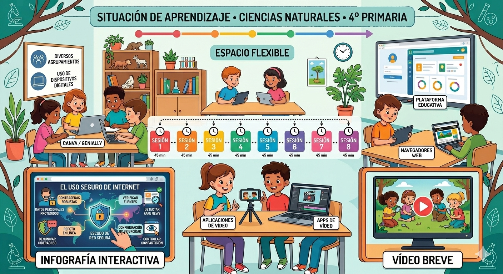

Yo navego segura, ¿y tú?
Esta Situación de Aprendizaje se dirige al alumnado de 4º curso de Educación Primaria, dentro del área de Ciencias Naturales.
Se utilizarán diferentes tipos de agrupamientos, siguiendo los principios del Diseño Universal para el Aprendizaje (DUA):
- Trabajo individual para actividades de reflexión y comprensión inicial.
- Trabajo en parejas para análisis de situaciones y resolución de pequeñas tareas.
- Trabajo cooperativo en grupos de 4-5 alumnos/as para el desarrollo del proyecto final mediante una organización basada en metodologías activas.
El espacio del aula se organizará de forma flexible, permitiendo el trabajo en grupo y el uso de dispositivos digitales.
La Situación de Aprendizaje se desarrollará a lo largo de 8 sesiones de 45 minutos, distribuidas de la siguiente manera:
- Una sesión inicial de motivación y presentación del proyecto
- Cinco sesiones de desarrollo (investigación, aprendizaje de contenidos y elaboración de productos)
- Una sesión de presentación de los productos finales
- Una sesión de evaluación y reflexión final
Mediante la realización de tareas, el alumnado desarrollará los siguientes productos:
- Una infografía interactiva en la que recogerán normas básicas para el uso seguro y responsable de Internet, incluyendo elementos visuales y pequeños elementos interactivos (enlaces, botones o iconos).
- Un vídeo breve en formato de campaña de concienciación, dirigido a otros compañeros y compañeras, en el que se explicarán consejos para navegar por Internet de forma segura y evitar riesgos.
Se utilizarán diversas herramientas digitales tanto por parte del docente como del alumnado:
- Canva o Genially para la creación de la infografía interactiva.
- Aplicaciones para la creación de vídeos (tablet u ordenador, Canva, CapCut, Clipchamp, …)
- Navegadores web para la búsqueda de información.
- Plataforma educativa (Teams, aula virtual…) para la organización del trabajo y comunicación.
- Recursos digitales como vídeos educativos o páginas web adaptadas al alumnado.
